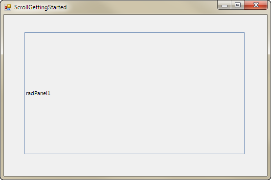
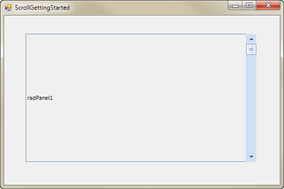
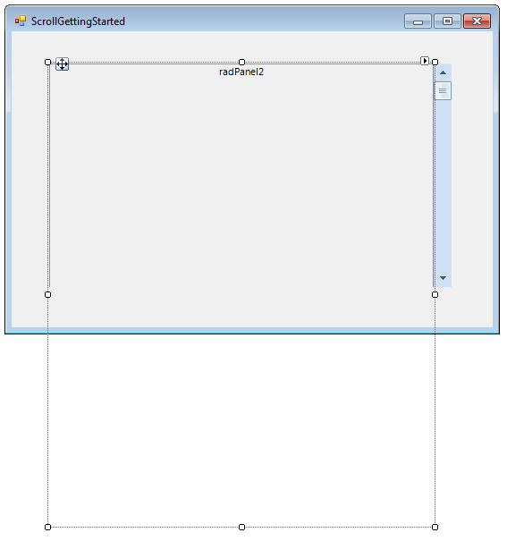
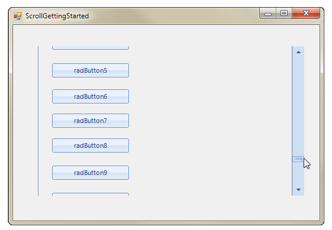

Getting Started
Using Telerik scrollbars is a bit more intricate compared to using the standard scrollbars because you have to handle scroll event manually. The rest of this article demonstrates how you can use two panels to implement scrolling for the content of the second panel.
Add a RadPanel to your form (Office2007Blue theme was used for both panels. This theme is contained in the Miscellaneous theme component):

Add a RadVScrollbar in the panel and dock it to the Right:

Add another RadPanel in the already added one and set its height to the total height you want to be available upon scrolling. This value can be statics e.g. 1000 pixels or dynamic determined by the scrollable content. For the purpose, of this example it is set to 1000 pixels.

The next step is to add controls to the second RadPanel (the controls which are to be scrolled):
[C#]
for (int i = 1; i < 15; i++)
{
RadButton button = new RadButton();
button.Location = new Point(30, i * 30 + 5 * i);
button.Size = new Size(70, 30);
button.Text = "RadButton" + i.ToString();
this.radPanel2.Controls.Add(button);
}
[VB.NET]
For i As Integer = 1 To 14
Dim button As New RadButton()
button.Location = New Point(30, i * 30 + 5 * i)
button.Size = New Size(70, 30)
button.Text = "RadButton" & i.ToString()
Me.RadPanel2.Controls.Add(button)
Next i
You can add controls by drag and drop at design time as well.

Then subscribe to the Scroll event of the vertical scrollbar and assign its negated value to the Top property of the second RadPanel:
[C#]
void radVScrollBar1_Scroll(object sender, ScrollEventArgs e)
{
this.radPanel2.Top = -this.radVScrollBar1.Value;
}
[VB.NET]
Private Sub radVScrollBar1_Scroll(ByVal sender As Object, ByVal e As ScrollEventArgs)
Me.RadPanel2.Top = -Me.RadVScrollBar1.Value
End Sub
The last required step is to set the Maximum__property of the scrollbar to reflect the size of the __scrollable height which is the total height__of the scrollable content minus the __visible height. For the example of this section in particular, that is the height of the second panel minus the height of the first panel.
[C#]
this.radVScrollBar1.Maximum = this.radPanel2.Size.Height - this.radPanel1.Size.Height;
[VB.NET]
Me.RadVScrollBar1.Maximum = Me.RadPanel2.Size.Height - Me.RadPanel1.Size.Height
